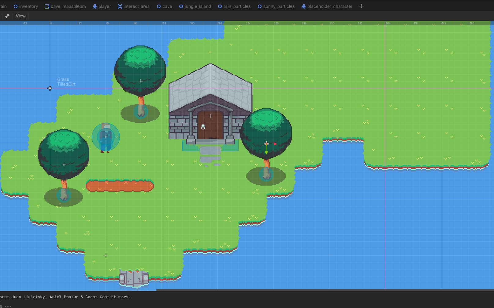
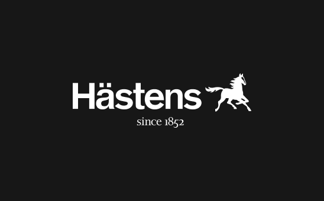
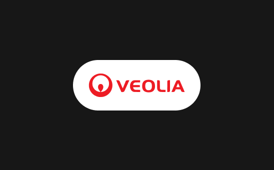
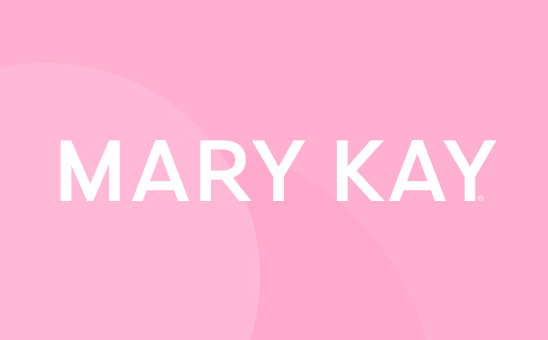
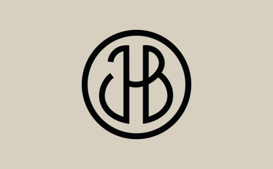

A MP4 -> MP3 converter
While working with sound effects in my game i found myself constantly having to convert mp4 files to mp3 to improve performance while also focusing on creating a fairly small game(in size). I relied on different online tools for converting theese but found the workflow to be quite tedious. I therefore developed this windows application with one simple purpose. Convert one or more mp4 files to mp3.

Game, working name: Lumbher
My unrealisticly large scope passion project, a 2d topdown survival game. Inspired by
games such as Stardew Valley, Terraria, Archvale and many more. Built within the Godot engine with a focus on building a strong modular codebase thats easily maintained while also being scalable.

Hästens
Supporting Hästens with everything UX/UI, from new features, new ideas and completely new
initiatives. Both internally for the workers of hästens and externally to their
customers.

Veolia
Creating and designing a completely new digital tool for handling quotes, reducing sale
offer preparation time from 3 to 4 days to just a few hours. Leveraging popular
frameworks such as Material UI for a smooth and well structured workflow.

Mary Kay
Working with Mary Kay to modernize their digital brand with a main focus on their swedish
market. With the goal of making their brand and products available for the broader user
groups.

JHB
Researching the main thesis; "Why do our users continue to use our older and more fragile
method of ordering products, instead of using our new digital order-system."

Sportson
Working with Sportson to tackle the question of quality of life for the workers, "How can
we improve the daily work for our bike-mechanics in relation to our digital eco-system."